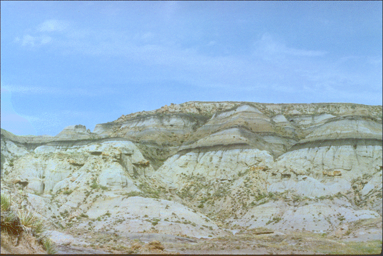
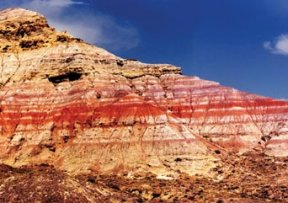

Notice the distinct layering of the rock. This site in
Montana
shows a separation point between the age of dinosaurs and later
periods.
Paleontologists and evolutionary biologists take advantage of
areas of
extensive erosion where layers of ancient rock have been exposed.

Red sedimentary layers in Wyoming mark the first known North American occurrence of several mammal groups, some 55 million years ago. Fossils found in these layers reveal extinct dog-size like predators, called hyaenodontids.